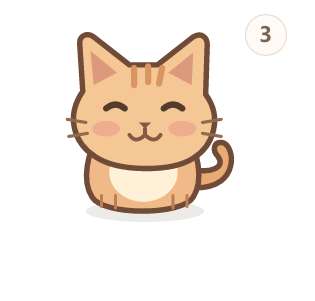

<!doctype html>
<html lang="zh-CN">
<meta charset="utf-8"><meta name="viewport" content="width=device-width, initial-scale=1">
<title>Pocket Pet · 示例演示</title>
<style>
*{box-sizing:border-box}body{margin:0;background:#f5efe6;color:#594536;font:16px system-ui,sans-serif}main{max-width:1040px;margin:auto;padding:32px 20px}h1{font-size:32px;margin:0 0 10px}p{line-height:1.7;color:#806b5b}nav{display:flex;gap:8px;flex-wrap:wrap;margin:22px 0}button{border:1px solid #decabb;border-radius:24px;padding:10px 18px;background:#fffaf4;color:#665040;cursor:pointer;font:inherit}button[aria-pressed=true]{background:#a8512c;color:white}button:focus-visible{outline:3px solid #a8512c;outline-offset:3px}figure{margin:0;background:#e8ded0;border-radius:24px;padding:24px;text-align:center;min-height:420px}img{max-width:100%;max-height:66vh;object-fit:contain}figcaption{margin-top:16px;line-height:1.6}small{display:block;margin-top:18px;color:#806b5b}
</style>
<main><h1>先收下，忙完再处理。</h1><p>口袋宠物 · Windows 桌面备忘原型</p>
<nav aria-label="演示步骤"><button aria-pressed="true" data-step="0">1 · 小猫入口</button><button aria-pressed="false" data-step="1">2 · 随手记录</button><button aria-pressed="false" data-step="2">3 · 悬停速览</button><button aria-pressed="false" data-step="3">4 · 完成反馈</button></nav>
<figure><figcaption id="caption" aria-live="polite">数量放在右上角；零待办时隐藏。</figcaption></figure>
<small>使用内置示例数据生成的界面快照。这是步骤图示，不是连续录屏；实际桌面显示仍需实机验证。无追踪脚本，无外部网络依赖。</small></main>
<script>
const steps=[['pet.png','小猫右上显示示例待办数量','数量放在右上角；零待办时隐藏。'],['record.png','输入和待办处于同一面板','点开即可输入，Enter 收下，待办就在下方。'],['side-rail.png','三个独立的侧边待办卡片','悬停小猫速览，滚轮翻阅，点击打开详情。'],['completion-dust.png','完成记录的像素消散中间帧','完成时像素分层消散，6 秒内可以撤销。']];
document.querySelectorAll('button[data-step]').forEach(button=>button.addEventListener('click',()=>{const step=steps[Number(button.dataset.step)];const img=document.getElementById('preview');img.src='media/'+step[0];img.alt=step[1];document.getElementById('caption').textContent=step[2];document.querySelectorAll('button[data-step]').forEach(b=>b.setAttribute('aria-pressed',String(b===button)));}));
</script></html>
